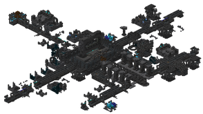

The Ancient City is one of our favorite structures since it provides overpowered loot. However, traversing through this structure is really challenging since the Warden, one of the most difficult mobs to deal with, might spawn.
An image of the Ancient City's layout:
The Ancient City is a very large structure that spawns within a Deep Dark Biome. The City contains long corridors with 2-block-deep layers of gray wool on the floor, and some rugs made of blue, light blue and cyan wool or carpet floors. There are some small ruins in the city with chest that contain very good loot.
As stated earlier, this structure is the home of the Warden.